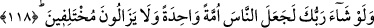

sultanlarına gelince, haksızlık ettikleri ve adâletle muttasıf olmadıkları için onlara âdil
sıfatı verilmemektedir. Çünkü böyle oldukları halde sırf övüp medh etmek gayesiyle
verilmiş olacağı için onlara âdil lakâbının verilmesi yalan olurdu.
Hikaye edilir ki Enûşirvân öldüğünde tabutu tüm ülkede gezdirilip “Kimin üzerimizde
hakkı varsa gelsin.” diye tellâl bağırtıldığı halde onun bir dirhem borçlu olduğu bir kişi
bile çıkmamıştır.
Acem padişahları neden zulümden uzak oldu
Çünkü Mustafa onun devrinde anadan oldu
Ebû Meysere’nin şöyle dediği rivayet edilir: Bir adam defnedildikten sonra Münker
ve Nekir adamın kabrine gelip:
“–Sana yüz kırbaç vuracağız.” demişler.
Adam:
“–Ben dünyada iken şöyle şöyle bir adamdım.” deyince bu özelliği kendisine şefaatçi
olmuş ve cezâsı on kırbaç eksiltilmiş. Böyle bir takım özellikleri saya saya nihâyet tek
kırbaca kadar düşürülmüş.
Münker ve Nekir:
“–Sana bir kez vuracağız” deyip bir kırbaç vurunca kabir kıpkızıl ateş kesilmiş.
Adam:
“–Bana niçin vurdunuz?” diye sorunca şöyle cevap vermişler:
“–Haksızlığa uğratılan birinin yanından geçerken senden yardım istemişti. Fakat sen
yardım etmemiştin.”
İşte mazlûma yardım etmeyenin hâli böyle olursa, zâlimin hâli nice olur? Şu halde
sultanların ve idarecilerin bütün tebaalarına adâletli davranması, ehl-i İslâm’ın
hâllerini araştırıp bularak çözüme kavuşturması gerekir.
Âlimin yanında makbul gelmez
Çobanın uyuması, kurdun da koyunların içinde olması
Hatta yapabilirsen halkın gönlünü yaralama
Eğer yapacaksan kendi kökünü kopar
118. Rabb’in dileseydi bütün insanları bir tek ümmet yapardı. (Fakat) onlar
ihtilâfa düşmeye devam edeceklerdir.